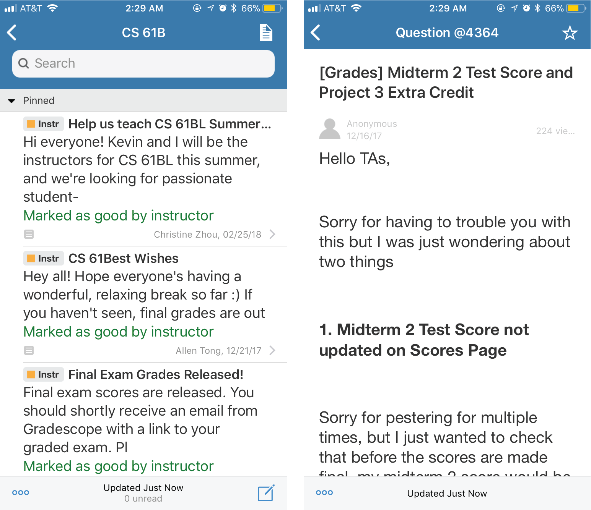
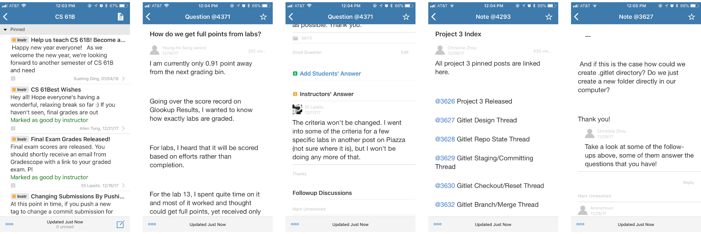
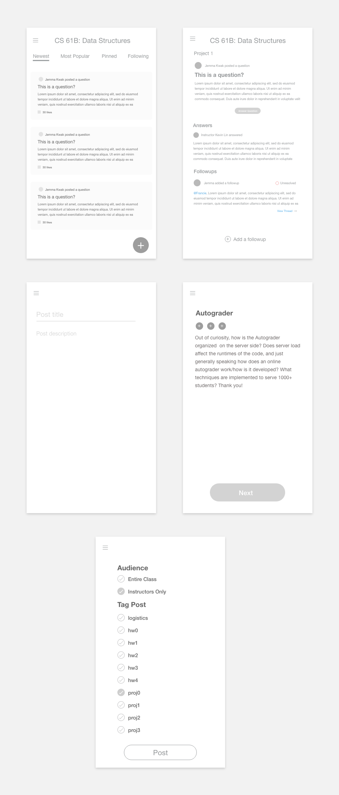
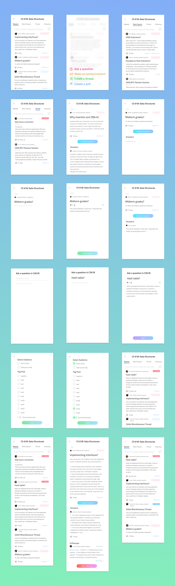
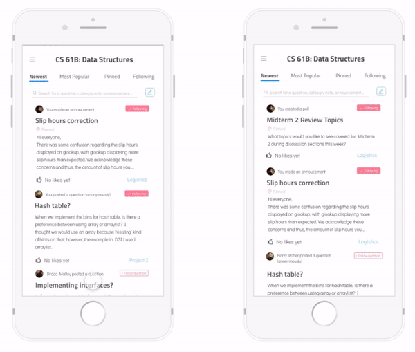
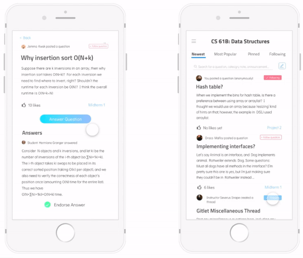

Piazza
is an online discussion and Q&A forum used by schools.
Classes at UC Berkeley use Piazza as the main mode of communication between students and
instructors. Students use the platform to ask questions about topics ranging anywhere from
course material to general course logistics, to declarations of gratitude and happiness at
3am after finishing a particularly difficult project(See
gitlet
).

As someone who has used Piazza as a student and instructor, I understood many of the usability issues and disappointing user interface from both ends. One of the key features that make Piazza so useful is its ability to make the classroom feel smaller by connecting students directly with the teaching staff. For students enrolled in huge classes at Berkeley(professors have asked for students not to come to physical lecture and, instead, watch online webcast videos), Piazza is a refuge where both parties—students and teachers—get to ask and answer questions on their own time. Unfortunately, the organization of the application is confusing, jumbled, and frustrating to use.

After conducting user research on the current use of the app, I concluded that
the biggest areas for improvement would be the organization of posts, flow of answering
questions(particularly in threads), emphasis of existing key features, and the sense of a classroom feeling.
I also saw a huge opportunity to give the user interface a much-needed facelift
that could bring Piazza into the present with a modern look and feel.
After some user research, I consolidated the main pain points I felt necessary to address with the redesign.
There is currently no organization
to the mass amount of questions. Students must
be exact when searching for a post that can often be buried during high traffic times, such
as project and homework deadlines.
One of the current action items for a user is to “Good Question” or “Good Note” a post.
I decided to generalize the system into “likes.”
The “Most Popular” posts are intuitively the ones with the most likes.
Piazza's current design does not lend itself
to an incredibly social environment. I hoped in emphasizing both students’ and teachers’
identities would a more social, relaxed
user experience for all parties.
Many questions turn into lengthy discussions with the “Followup” feature.
With the feature of anonymity in followups, it is unclear who is talking to who when the threads become long, despite
the importance of the feature.




This was my first serious mobile redesign. If I were to do things differently,
I would have definitely started with a style guide. I had been unfamiliar with the grid system
at the time and did not incorporate specific step sizes into my designs.
Additionally, I didn't utilize the Assets palette in Adobe Xd, which made any necessary changes
to a single, repeated component very tedious.
Piazza is truthfully one of the most utilized, free tools at Berkeley. By improving
the accessibility and usability of such an important academic resource, we can improve
the overall experience for both the student and the instructors.
I truly hope Piazza is able to see the importance of user flow, a and ultimately,
move the application in the direction where students feel excited to use it.
Up Next
BerkeleyTime


{kind=link}